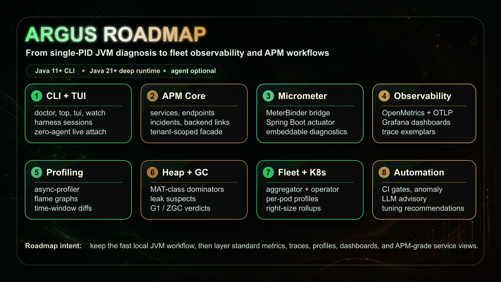

Argus JVM Observability Platform
A lightweight JVM observability platform that helps you understand what your Java application is doing — right now, in production.
Argus ships in four deployment forms:
- Argus CLI — 71 diagnostic commands that work on any running JVM. No agent, no restart, no configuration. Point at a PID and get answers in seconds.
- Argus Agent — Attach as a Java agent and get a live web dashboard with GC timelines, CPU graphs, heap usage, flame graphs, and thread analysis, all streaming in real time.
- Spring Boot Starter — Drop
argus-spring-boot-starterinto any Spring Boot app to get diagnostics mode (argus.mode=full|diagnostics|off), a scheduled doctor, and/actuator/argus-doctorand/actuator/argus-gcendpoints. - argus-diagnostics library — A framework-agnostic embeddable library that exposes the same
DoctorService,GcLogAnalyzerService, andGcScoreServicebeans in any JVM app, without Spring.
Philosophy: Argus is not an APM. It's a diagnostic tool designed for the moments when you need to look inside a JVM and understand what's happening — quickly, without setup overhead, without external dependencies.
Roadmap at a glance
Argus keeps the fast single-PID JVM workflow at the center, then layers standard metrics, traces, profiles, dashboards, fleet views, and APM-grade service workflows around it.

Why Argus?
Every Java developer has been there. Your application is running in production, and something is wrong. Response times are climbing. Memory usage is creeping up. The GC is pausing more often than it should. You know something is happening inside the JVM, but you can't see it.
Traditional monitoring tools tell you that your app is slow, but they don't tell you why. APM solutions are expensive and heavy. JMX is clunky. JFR dumps require post-processing. By the time you've gathered the data, the incident is over.
Argus was built to solve this problem.
Instant CLI Diagnostics
71 commands that work on any running JVM. No agent, no restart, no configuration. Just point at a PID and get answers in seconds.
Real-time Dashboard
Attach as a Java agent and get a live web dashboard with GC timelines, CPU graphs, heap usage, flame graphs, and thread analysis — all streaming in real time.
Virtual Thread Aware
First-class support for Java 21+ virtual threads. Pinning events are classified into three buckets per JEP 491 — native-frame, foreign-call, and object-monitor pins. The agent dashboard renders the StructuredTaskScope (structured-concurrency) tree from a VT-aware thread dump, and a carrier-saturation rule in argus doctor fires when the carrier pool saturates.
Zero Overhead Design
The core diagnostic path is built on JFR and JMX MXBeans — the same low-overhead infrastructure the JVM uses internally. No bytecode modification by default, no sampling bias.
MAT-class Heap Analysis
argus heapanalyze --leak-suspects --dominators=N --path-to-root builds a dominator tree, retained sizes, GC-roots reachability, and an automated leak-suspects report — offline, on multi-GB dumps, within a bounded analyzer heap.
Continuous Profiling
Disk-backed, time-windowed per-pod CPU/alloc profiles with merged-window flamegraph queries and differential flamegraphs across time ranges — no external TSDB.
Distributed-Tracing Correlation
GC pauses are correlated with in-flight W3C trace context and exported as OpenTelemetry spans, with trace-ID exemplars on pause-time metrics — see which traces a pause stalled in Tempo, Jaeger, or Grafana.
Opt-in Live Instrumentation
argus instrument {watch|trace|monitor} <pid> <Class#method> captures args, return, exceptions, and timing on a running JVM via dynamic-attach bytecode instrumentation. Default OFF, isolated, auto-detaches with zero residual bytecode.
OpenMetrics & Grafana
OpenMetrics-compliant /prometheus export with per-collector GC pause histograms and trace-ID exemplars, plus a shipped Grafana dashboard and recording/alert rules.
OTel-Native Metrics
Metrics are dual-emitted under standard OpenTelemetry JVM semantic-convention names (jvm.gc.duration, jvm.memory.used, …) alongside the legacy argus_* series. Toggle legacy names off with argus.metrics.legacyNames=false to drop into an OTel-native stack without renaming dashboards.
JVM Right-Sizing (FinOps)
argus rightsize <pid> derives -Xmx/-Xms and container memory request/limit recommendations from observed heap high-water-mark, post-GC live-set floor, and alloc/promotion rate — with the inputs and safety factor shown, plus an OOMKill-risk flag. A fleet roll-up is available via the aggregator's /fleet/rightsize endpoint.
Learned Anomaly Detection
The agent can baseline each signal online (z-score, EWMA, and IQR over a rolling window) and fire on sustained regime shifts. Configured via argus.anomaly.mode=fixed|learned|both; defaults to fixed for back-compat. learned and both are opt-in.
Opt-in LLM Root-Cause
argus explain --llm and argus doctor --rca attach an LLM advisory to the deterministic findings. Default OFF; requires a bring-your-own-key API credential. Only the deterministic findings payload is sent — raw heap or profile data is never forwarded — and the deterministic output is always shown alongside.
Installation
One command. Takes about 10 seconds.
curl -fsSL https://raw.githubusercontent.com/rlaope/argus/master/install.sh | bashThis downloads the Argus CLI to ~/.argus/ and adds it to your PATH. After installation, type argus with no arguments to see all available commands.
Continue reading
- CLI Commands — every diagnostic command and what it answers, including the dedicated ZGC diagnosis workflow.
- vs Traditional JVM Tools — what changes when Argus replaces a 5-tool chain in five production scenarios.
- Real-World Scenarios — twelve production incidents (humongous allocations, TTSP, OOMKilled, deopt storms, …) walked through end-to-end.
- Dashboard — agent setup, the JVM-health-first layout, interactive console, configuration knobs.
- Integrations — Spring Boot starter,
argus-diagnosticsembedded library, Micrometer metrics, OTel/OpenMetrics export, and Pyroscope / OTLP continuous-profile push. - Reference — Java version compatibility matrix, module architecture, full configuration reference.